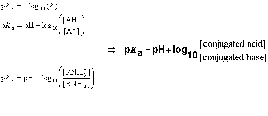

pKa Calculation
- Introduction
- Definition of Acid Dissociation Constant Ka
- Definition of pKa
- Definition of acidic and basic prefix of pKa
- Multiprotic Molecules
- Ionization Steps of the AH3 Molecule
- Examples
- References
Chemical properties of molecules depend largely on whether they are ionized or not.
Most organic molecules are capable of gaining and/or losing a proton in aqueous solutions.
Proton transfer most frequently occurs between water and any ionizable atom of the organic molecule.
The molecule's response to protonation or deprotonation depends significantly on the site that was disturbed by proton transfer.
Partial charge distribution in the molecule also varies with protonation of the acid/base active sites.
Since the partial charge distribution is very sensitive to the protonation-deprotonation process
(both near and far from the disturbed site), it can be used to determine the pKa of a molecule.
Our pKa prediction program is based on the calculation of partial charge of atoms in the molecule.
Acidic and basic molecules are ionized in
aqueous solution. Acidic or basic character is assigned to the molecule according to Brönsted's rule. The ratio of the ionized and neutral forms depends on the
pH, the temperature and the ion activity of the bulk phase.
The ionization constant Ka is obtained from the activity ratio of conjugated base and conjugated acid multiplied with proton activity.

pKa is obtained from the ionization constant of a molecule using the following definition.

When the pH of the solution is equal with pKa, the concentrations of dissociated and undissociated species are equal.
definition of the basic prefix
Protonated positive ions are considered as protonated basic sites , therefore , "basic" prefix is used for them.
Type of the neutral basic sites are predefined in the pKa calculator, they also have "basic" prefix.
e.g.: if submitted molecule is CH3NH2 or CH3NH3+ they get "basic" prefix and pKa=10.08
definition of the acidic prefix
Deprotonated negative ions are considered as deprotonated acidic sites , therefore , "acidic" prefix is used for them.
Type of the neutral acidic sites are predefined in the pKa calculator, they also have "acidic" prefix.
e.g.: if submitted molecule is CH3COOH or CH3COO- they get "acidic" prefix and pKa=4.54
When a molecule contains more than one ionizable atom, it is called a multiprotic compound.
For these types of molecules we need to distinguish between micro and macro acidic dissociation constants.
The micro acidic dissociation constant is obtained from the equilibrium concentration of the conjugated acid-base pairs.
The macro acidic dissociation constant is obtained from the global mass and charge conservation law.
When a molecule has N ionizable sites, the total number of micro species in the solution is 2N.
To further understand the difference between micro and macro constants
we consider ionization equilibrium of a triprotic acid AH3.
Referring to the different deprotonation sites of the AH3 molecule we introduce the upper indexes of the protons.
The ionization process of the AH1H2H3 molecule in aqueous solution is described with 12
equilibrium reactions. Micro species and their charge are summarized in Table 1.

Table 1. Protonation State of Microspecies
| Microspecies |
charge |
|
AH1H2H3 |
0 |
|
AH1H2
, AH1H3
, AH2H3 |
-1 |
|
AH1
, AH2
, AH3
|
-2 |
| A |
-3 |
The AH3 molecule has three macro acidic constants since it is triprotic acid.
Macro acidic constants K1, K2, and K3
are obtained from the concentration of the microspecies:

And the three macro pKa values of the AH3 molecule that would be obtained with routine laboratory measurements are as follows:
pKa,1=-log10(K1)
pKa,2=-log10(K2)
pKa,3=-log10(K3)
Example 1.
The ionization steps of p-amino benzoic acid are outlined below. Calculated micro
ionization constants k1, k2, k3
and k4 are indicated on the arrows:

Below are the calculated and the experimental pKa of p-amino benzoic acid

Example 2.
Imides and amides can have either acidic or basic character.
The extent of amide/imide ionization at a given pH is determined by two acid dissociation constants:
pKa,1assigned to the deprotonation step
RNH  RN- + H+
RN- + H+
and
pKa,2assigned to the protonation step
RNH2+ RNH + H+
Ratio of anionic and cationic species depends on pKa,1, pKa,2 and the pH:

If 2pH - (pKa,1 + pKa,2) > 0 than deprotonation of amide/imide is favored and the molecule is said to have an acidic character.
If 2pH - (pKa,1 + pKa,2) < 0 than protonation of amide/imide is favored and it is considered to have a basic character.
Chemists often want to know the ionization state of organic compounds at pH 7.4.
In general, the macro pKas of amide/imide compounds are calculated and their acidic
or basic character determined with the above formulas at pH 7.4.
Calculated and measured pKa of phtalimide and 2-pyridone are given in
Table 2.

Table 2. Calculated and Observed Acidity Constants
| Compound |
Calculated pKa |
Observed pKa |
| phtalimide |
8.22 |
8.30 |
| 2-pyridone |
11.40 |
11.70 |
Example 3
The value of ionization constants of conjugated acid-base pairs
usually falls between 10-10 and 1020, so
these limits are generally used to predict the pKa.
When an ionizable site in the molecule has very weak basic or acidic character, this can be accomodated by increasing the calculation range.
The molecule depicted below contains a very weak basic atom.
First, macro pKa is calculated with default limits predefined between
10-10 and 1020.
Then macro pKa is calculated with altered limits defined between
10-50 and 1020.
Changing of the default settings of macro pKa calculation can be done in the
Tools  Options pKa menu of MarvinSketch.
Options pKa menu of MarvinSketch.
Calculated and observed acidity constants are summarized in Table 3. Measured pKas taken from Ref.3.
Table 3. Calculated and Observed Acidity Constants
| pKa |
First calc. |
Second calc. |
Observed |
| pKa,1 |
4.24 |
4.24 |
4.51 |
| pKa,2 |
5.75 |
5.75 |
6.01 |
| pKa,3 |
- |
-35.81 |
- |
- Prediction of dissociation constant using microconstants, J. Szegezdi and F. Csizmadia, 27th ACS National Meeting, Anaheim, California · March 28-April 1, 2004
- Calculating pKa values of small and large molecules, J. Szegezdi and F. Csizmadia, American Chemical Society Spring meeting, March 25-29th, 2007
- Clark, F. H.; Cahoon, N. M., J. Pharm. Sci., 1987, 76, 8, 611-620
- Dixon, S. L.; Jurs, P. C., J. Comp. Chem., 1993, 14, 12, 1460-1467; doi
- Csizmadia, F.; Tsantili-Kakoulidou, A.; Panderi, I.; Darvas, F., J. Pharm. Sci., 1997, 86, 7, 865-871; doi